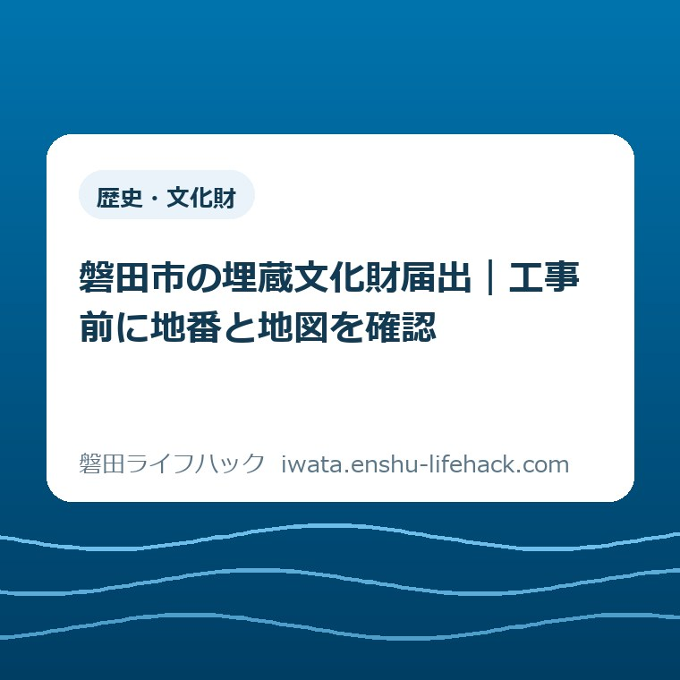

歴史・文化財
磐田市の埋蔵文化財届出｜工事前に地番と地図を確認

この記事の要点
Q. 磐田市で家を建てたり土地を掘ったりする前に、何を確認しますか？
A. 地番と対象地を示した地図を用意し、設計前に文化財課へ遺跡範囲を照会します。範囲確認は電話ではできません。遺跡内で掘削工事をする場合は工事着手60日前までの届出が必要です。個別の判断は必ず磐田市公式ページと文化財課で確認してください。
導入——電話一本では、遺跡の範囲を確認できない
磐田市内で住宅の新築や造成など、土地を掘る工事を計画するときは、最初に地番と対象地を示した地図をそろえます。磐田市文化財課は、遺跡範囲の確認を電話では行っていません。来課、電子申請、メールのいずれかで照会します。
意外なのは、工事の図面を完成させてからでは遅いという点です。磐田市は2026年4月1日更新の「開発に伴う埋蔵文化財の取り扱い」で、なるべく早い時期、設計を行う前の協議を案内しています。
土地の持ち主の方がすでに払っている手間は小さくありません。住宅会社や解体会社との打ち合わせ、見積もり、境界、道路、上下水道、資金の確認が並びます。その上に文化財の確認が一つ増えます。
だから、今日そろえる物を二つに絞ります。登記事項証明書などで読める正確な地番と、道路や隣地を含めて対象地へ印を付けた地図です。範囲照会まで進めれば、届出が必要かどうかの入口に立てます。
言い切ります。着工日が決まってから文化財課へ電話するのでは遅い。工事を契約する前に、地番と地図を一組にして照会してください。磐田市で家を建てるときの確認事項とは別枠で、土地を掘る前の確認として扱います。

磐田市の公式案内から、対象と期限を整理する
磐田市の「開発に伴う埋蔵文化財の取り扱い」によると、遺跡の範囲で掘削を伴う建設工事・土木工事を行う場合、文化財保護法第93条に基づく届出が必要です。2026年9月2日に主ページと添付資料を確認しました。
正式な様式名は「埋蔵文化財発掘届出書」です。様式には所在地、面積、土地所有者、工事目的、工事主体者、施工責任者、着手予定時期、終了予定時期などの欄があります。個人住宅も工事目的の選択肢に入っています。
届出には、土木工事等を行う土地と付近の地図、工事の概要を示す書類や図面を添えます。市の主ページは、書式に必要事項を記入し、図面を添付するよう案内しています。押印は不要です。
工事着手60日前までという期限は、磐田市が2026年4月1日に発行した「いわた文化財だより第253号」で確認できます。主ページ本文には「事前」「設計を行う前」とあり、60日という数字は同資料に載っています。
第253号は、工事の規模に関係なく、計画段階で文化財課へ相談するよう案内しています。小さな工事だから無関係、と持ち主側だけで決めるのは避けます。遺跡範囲と掘削内容を市へ示して判断を受けます。
一方、「遺跡が発見されていない地域（大字）一覧表」の掲載地域では、範囲照会と第93条届出は不要と案内されています。一覧は令和8年4月1日現在です。新発見で修正されるため、古い保存データだけで判断しません。
工事中に土器など遺跡と思われる物を発見した場合は、一覧掲載地域でも文化財課へ連絡します。「一覧に地名があったから、その後は何が出ても進めてよい」という仕組みではありません。
新築・解体・造成は、工事名ではなく掘る内容で考える
埋蔵文化財の確認は、「新築だから必要」「解体だから不要」と工事名だけで分けられません。遺跡の範囲に入るか、土地をどこまで掘るか、基礎や杭、配管、擁壁、造成の内容を図面で確認します。
個人住宅の新築は、届出様式に工事目的として明記されています。基礎、地盤改良、給排水管など、地面の下へ手を入れる工程があります。住宅会社へ、文化財課への照会を誰が担当するか早い段階で聞きます。
解体工事について、市の主ページは「解体なら必ず届出」とは書いていません。建物を上から取り壊す部分と、地中の基礎を撤去する部分では土地への影響が違います。解体という一語で結論を出さないことです。
空き家を解体する予定なら、見積書に基礎撤去、杭抜き、整地、残置管の撤去が含まれるかを確認します。磐田市で耐震・解体を考える手順と併せ、施工会社から掘削範囲が分かる資料を受け取ります。
災害で傷んだ空き家では、先に被害状況を写真で残す必要もあります。磐田市の空き家は被災証明書となる条件を確認し、証明の記録、解体判断、埋蔵文化財照会を混ぜずに順番を付けます。
造成は、盛土だけに見えても切土、擁壁、排水設備などを伴うことがあります。工事の呼び名より、平面図と断面図で「どこを、どの深さまで掘るか」を文化財課へ示すほうが話が早く進みます。
最初に用意するのは、住所ではなく地番と対象地の地図
遺跡範囲の照会で用意するのは、土地の地番と対象地を示した地図です。普段使う住居表示と土地の地番は同じとは限りません。固定資産税の納税通知書、登記事項証明書、売買契約書などで対象筆を確かめます。
一つの敷地が複数の筆に分かれている場合は、工事にかかる地番を省かず並べます。庭だけ別の地番、進入路が共有地、隣の筆へ配管を通す計画など、建物の住所だけでは工事範囲を表せない場合があります。
地図には、対象地がどこか分かる印を付けます。住宅地図や案内図を送るだけでなく、道路、交差点、隣接地との位置関係が読み取れ、対象範囲を囲んだものにします。メールなら文字と印が読めるか確認します。
電話番号は文化財課の問い合わせ先として公開されています。ただし、市が電話不可としているのは遺跡範囲の確認です。一般的な相談と、特定土地の範囲判定を分けて受け止めます。
来課する場合は、磐田市見付3678番地1の磐田市埋蔵文化財センター内に文化財課があります。受付は平日の午前8時30分から午後5時15分です。祝日、年末年始は休みで、開発に伴う確認と届出提出は土日に対応していません。
電子申請とメールは、遺跡範囲を確認する方法です。主ページだけからは、第93条届出そのものを電子提出できるとは確認できません。範囲に該当した後の提出方法、部数、提出日は文化財課へ別に確認します。

該当したら、60日前を着工日から逆算する
遺跡範囲に該当し、掘削を伴う工事なら、工事着手60日前までの届出を前提に工程を組み直します。60日前は相談開始の目安ではなく届出期限です。市は設計前のできるだけ早い協議を求めています。
着工予定日を施工会社へ確認し、そこから60日を逆算してカレンダーに記録します。2026年12月1日着工予定なら、単純に「10月ごろ」と書かず、文化財課へ具体的な提出期限を確認して日付で残します。
届出後の取り扱いは、工事内容や遺跡の状況で同じになりません。市との協議で図面確認や調整が生じる可能性があります。届出を出せば必ず予定どおり着工できる、と先に決めつけません。
工事契約では、文化財の確認で工程や内容が変わった場合を誰が調整するかも見ます。土地所有者、建築主、設計者、施工会社のうち、照会、届出作成、市との連絡を誰が担うか、一行ずつ書いておきます。
費用や調査の要否も個別条件で変わります。この記事から一律の金額や日数は示せません。文化財課へ地番、地図、工事図面、着工予定日を出し、今回の土地と工事に必要な段取りを確認してください。
確認結果は、メールや受付記録と一緒に工事フォルダへ保存します。口頭で聞いた一般論だけに頼ると、担当者や図面が変わったときに前提が抜けます。回答日、対象地番、提示図面の版を残します。
評価——良い点を先に、注文したい点を後に
良い点は、磐田市が遺跡範囲の確認方法を来課だけに限定していないことです。電子申請とメールがあり、地番と地図を送れます。平日に見付まで行きにくい持ち主や、市外に住む相続人にも使える入口があります。
遺跡が発見されていない大字の一覧、届出様式、記入例も同じページから確認できます。確認不要となる地域と、該当時に書く内容の両方が見えるため、施工会社へ渡す資料をそろえやすい案内です。
電話で範囲判定をしない点にも理由があります。似た地名や地番の聞き違い、対象筆の漏れを避けるには、地図で場所を示すほうが確実です。土地の判断を記録に残す仕組みとして筋が通っています。
注文したい点は、「範囲確認」と「第93条届出」の提出方法が一読で混ざりやすいことです。電子申請という表示を見ると、届出本体もオンラインで完結すると受け取る人がいるかもしれません。
もう一つは、60日前という大事な期限が主ページ本文では見つけにくいことです。期限は市の文化財だよりで確認できますが、着工を控えた土地所有者には主ページでも同じ数字が見えるほうが段取りを組みやすいと私は考えます。
行政の案内を責めても工期は戻りません。持ち主側でできる対処は、主ページだけを流し読みせず、添付資料まで確認し、着工日から逆算することです。市へ尋ねるときも「必要ですか」だけでなく資料をそろえます。
対案・結論——今日、地番と地図を一つのPDFにする
磐田市で工事を予定する土地所有者が今日できる一歩は、全地番と対象範囲を示した地図を一つのPDFにすることです。工事内容が固まっていなくても、場所の照会は設計前に始められます。
ファイル名は「土地所在地_埋蔵文化財照会_20260902」のように、場所、用途、作成日が分かる形にします。家族、設計者、施工会社の誰が開いても、どの土地をいつ確認した資料か分かります。
次に施工会社へ、基礎、杭、配管、擁壁、基礎撤去などの掘削範囲と深さが分かる図面を依頼します。照会後に該当すると分かったら、文化財課へその図面を示し、届出と協議の順番を確認します。
空き家の活用や売却をまだ決めていない場合も、確認だけは先にできます。磐田市の空き家バンクと空き家おこしプロジェクトの違いを読む前後で、土地の工事条件を一つ増やしておくと選択肢を比べやすくなります。
工事をするかどうかは、今日決めなくても構いません。ただ、地番と遺跡範囲は、建てる、壊す、造成する、売る、どの選択でも使う材料です。決断を急がず、判断材料を先にそろえます。
確認する順番——六つの欄を家族と施工会社で埋める
工事前の確認票には、対象地番、位置図、掘削範囲と深さ、着工予定日、照会担当者、文化財課の回答日の六つを書きます。空欄があれば、誰がいつ埋めるかを決めます。
- 固定資産税の書類や登記事項証明書で、工事範囲にかかる地番を全部確認する。
- 対象地を囲んだ地図を作り、来課・電子申請・メールのいずれかで遺跡範囲を照会する。
- 施工会社から掘削範囲と深さの図面、着工予定日を受け取る。
- 該当したら、文化財課へ第93条届出と協議の手順を確認する。
- 工事着手60日前の期限を具体的な日付にし、担当者と共有する。
- 回答、届出控え、図面の版を一つのフォルダに保存する。
所有者が高齢で書類を探せない、市外の家族が手続きを担う、施工会社が複数ある、といった条件で担当は変わります。制度は同じでも、実際に動く人は各家庭で違います。
担当を曖昧にすると、「住宅会社がやると思った」「所有者が済ませたと思った」という空白が生まれます。照会した人の名前と日付を記録し、工事の定例打ち合わせで一度読み上げます。
大石の視点——追加の書類ではなく、着工を守る前工程
大石浩之（磐田市／不動産業）として、私は埋蔵文化財の確認を「役所へ出す書類がまた増えた」とだけ捉えないほうがよいと考えます。遺跡に該当する可能性を設計後に知れば、工期も家計も組み直しになります。
私にも迷いがあります。解体見積もりの段階で図面が粗く、どこまで掘るか決まっていないのに、どこまで市へ説明できるのか。だから、分からないまま不要と決めず、現時点の図面と未確定部分を分けて文化財課へ伝えるのが現実的です。
これは私の意見であり、特定の相談事例を体験談として書いたものではありません。体験のない場面を作るより、一次情報で分かる期限と、実務で必要になる担当・日付・図面の管理を分けて示します。
制度としては筋が通っています。ただ、実際に持ち主の側へ置き換えると、問題は「誰が、いつ、どの図面で確認するか」です。今日の成果は届出を完成させることではなく、地番と地図を一組にすることです。
まとめ——着工前ではなく、設計前に照会する
磐田市で住宅新築や造成など土地を掘る工事を計画するなら、地番と対象地の地図を用意し、設計前に遺跡範囲を照会します。範囲確認は電話ではなく、来課、電子申請、メールで行います。
遺跡の範囲で掘削を伴う場合は、文化財保護法第93条に基づく埋蔵文化財発掘届出書を、工事着手60日前までに提出します。解体工事は工事名だけで決めず、基礎撤去などの掘削内容を示して確認します。
今日することは、対象地番と地図を一つのファイルにすることです。対象、届出の要否、提出方法、期限は個別条件で変わります。最後は必ず磐田市の公式ページと文化財課で確認してください。
- 遺跡範囲の確認は電話不可。地番と対象地の地図を用意し、来課・電子申請・メールで照会する。
- 遺跡内で掘削を伴う工事は、第93条届出を工事着手60日前までに行う。
- 新築・解体・造成という呼び名ではなく、掘削範囲と深さを図面で示して個別に確認する。
よくある質問
磐田市で遺跡の範囲を電話で確認できますか。
遺跡範囲の確認は電話では受け付けていません。地番と対象地を示した地図を用意し、文化財課への来課、電子申請、メールのいずれかで照会します。一般的な問い合わせ用電話はありますが、電話で範囲判定は受けられません。
埋蔵文化財の届出は工事の何日前までですか。
遺跡の範囲で掘削を伴う工事を行う場合、文化財保護法第93条に基づく届出は工事着手の60日前までです。磐田市は設計前のできるだけ早い相談を案内しています。対象と提出時期は文化財課で確認してください。
解体工事でも埋蔵文化財確認が必要ですか。
解体という工事名だけでは一律に決まりません。遺跡の範囲か、基礎撤去などで土地を掘るかを、地番・地図・図面で文化財課へ示して確認します。工事中に遺跡を発見した場合も連絡が必要です。
参考にした公式情報
- 開発に伴う埋蔵文化財の取り扱い／磐田市（2026年9月2日確認・ページ更新日2026年4月1日）
- いわた文化財だより第253号／磐田市（2026年9月2日確認・2026年4月1日発行）
- 埋蔵文化財発掘届出書／磐田市（2026年9月2日確認）
- 遺跡が発見されていない地域（大字）一覧表／磐田市（2026年9月2日確認・令和8年4月1日現在）
- 磐田市埋蔵文化財センター／磐田市（2026年9月2日確認）

最終確認日：2026-09-02 ／ 本記事は公表情報と執筆者の見解を分けて記載しています。遺跡範囲、掘削内容、届出の要否、提出方法、協議内容は個別条件で変わります。最新情報は磐田市公式ページと文化財課（0538-32-9699）でご確認ください。